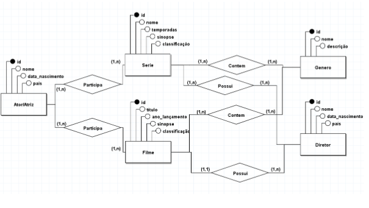
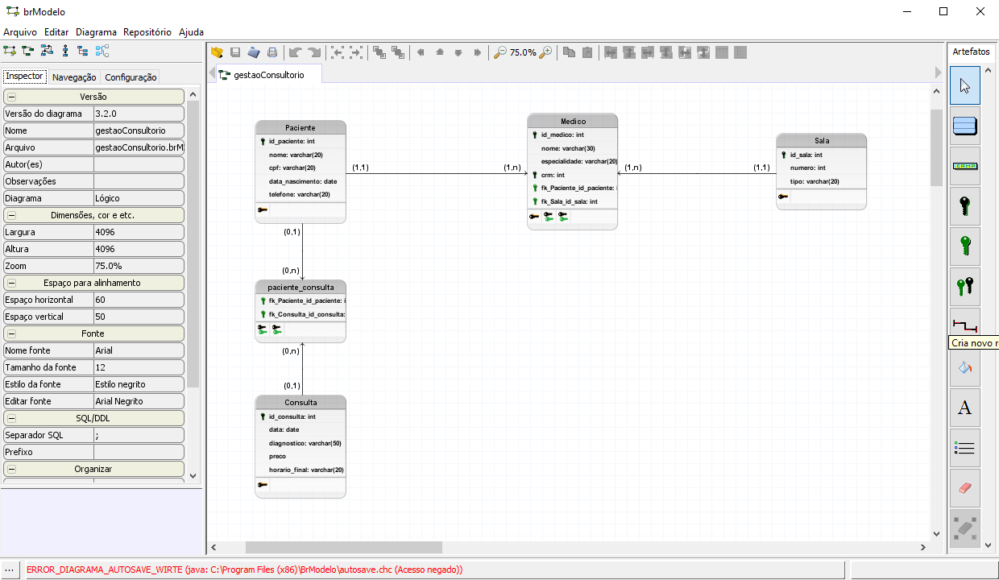
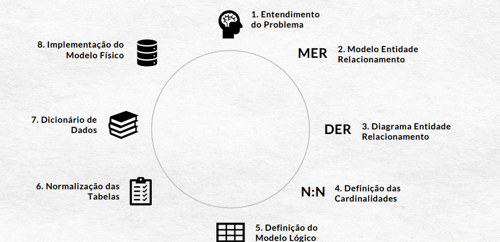

Página Inicial
Humanas
Linguagens
Matemática
Natureza
Técnico ▼
Desenvolvimento de Sistemas
Implantação e Manutenção de Sistemas
Modelagem de Sistemas
Banco de Dados
Programação de Aplicativos
Testes de Sistemas
2º Trimestre
3º Trimestre

O objetivo da atividade é construir modelos entidade-relacionamento para três sistemas diferentes: gestão de filmes e séries, gerenciamento de escola e loja online. Os modelos devem incluir entidades, atributos e relacionamentos. Habilidades Desenvolvidas: H1 e H2

O objetivo da atividade é modelar um sistema web em grupos, definindo entidades, atributos e relacionamentos. Os estudantes devem apresentar e explicar detalhadamente o modelo conceitual e lógico para a professora. Habilidades Desenvolvidas: H1, H2

O objetivo da atividade é pesquisar sobre a normalização de banco de dados, cobrindo definições, formas normais, aplicação prática, desafios e casos de desnormalização. A pesquisa deve incluir exemplos práticos e referências utilizadas. Habilidades Desenvolvidas: H3